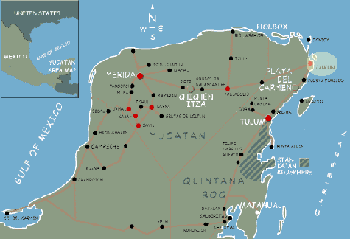

Cancún |
 |
1-Oct-00: Cancún Airport It's eleven a.m. At this time yesterday we were swimming in the Gran Cenote, forty pesos admission to the freshwater limestone sinkhole. Am guilty of some inexpert mime routine at the entrance concerning where to lock our trashed rental bikes. The Yucatán has no surface rivers but rather a wealth of them underground. When these are accessible without aggressive prying into the earth they are cenotes. Each is an ecosystem, an agreement among bats, translucent fish, mangroves and stalactites. It seems there are so many attempts to recreate cenotes at WaterWorlds and Disneylands: these fail because they don't include surprise rain showers, sinister, unlit caverns, guano, transparent water, turtles, garrulous birds, ramshackle stepladders of twigs and twine, and a two-mile ride back to the bungalow on a fixed-gear bicycle. It was developing into my most comfortable day in Mexico. The sky was gray with a rainstorm but the temperature was pleasant and there were no mosquitoes. Retired to the hammock and a hundred pages more of Don Quixote, until a good-looking young man came up to my perch to ask: ¿Inglés o alemán? He told me next in fluent English that we must leave the cabaña to avoid the danger presented by a hurricane just offshore. The other cabaña staff were already hammering plywood over windows. Once packed, Michael and I stood where the taxi usually lingered, in front of the bike rental and the tienda, noticing nothing but abandonment, wondering how we could get inland, much less to the airport, much less to SFO, when two dejected Italian tourists stepped from their would-be lovenest to rejoin their still-warm rental car. Sergio is from Bologna, had already driven through Mexico; the hour of good road to Playa del Carmen was no stressor. Nuccia is from Calabria and understands enough English to laugh sympathetically when I complain about the coffee I've drunk in Mexico. The cab driver to Cancún seemed unbothered by the heavy rain and the crowds of resort workers going home early. He patiently corrected our pronunciation and reassured us the hurricane was poised off Chetumal, wouldn't disturb Cancún much. On Avenida Tulum he presented us with a souvenir shot glass--" ¡un regalo! -- then drove away, unperturbed, despite high winds and alerts, fifty miles back to Playa del Carmen. The Hotel Alux exposed all its charms within two minutes. The familiar moldy smell now mingled with the aroma of sewage from the overwhelmed storm drains. A car alarm just below our hotel window engaged more steadily than Big Ben. Combined with the cavorting of fleas in the bed, it ensured that my evening at the Hotel Alux would be spent in unplanned vigil. Besides smearing my mosquito bites with ointment, I amused myself with the local emergency television broadcast. This proved a triumph of low-cost collage, combining home video footage of Hurricane Mitch, NASA satellite images and Magic Marker drawings of Caribbean meteorology, these last gems set about 5º off kilter from the camera frame, all these elements intending to educate us about the scary phenomenon offshore. An especially delightful moment of the broadcast arrived with the animated spiral superimposed over a map of the Gulf of Mexico: the spiral rotated as erratically as the puppeteer's hand turning it. Regrets: no last dip in the Caribbean; forgot to tip the hard-working cleaning people at the bungalow; no more cenotes explored; no second evening staring at the fully starlit sky over Tulum. -30- |